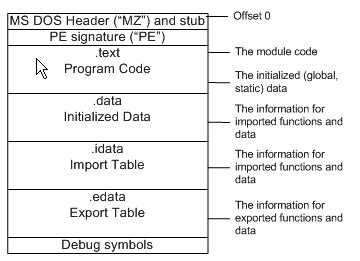

所谓游戏外挂，其实是一种游戏外辅程序，它可以协助玩家自动产生游戏动作、修改游戏网络数据包以及修改游戏内存数据等，以实现玩家用最少的时间和金钱去完成功力升级和过关斩将。虽然，现在对游戏外挂程序的“合法”身份众说纷纭，在这里我不想对此发表任何个人意见，让时间去说明一切吧。
不管游戏外挂程序是不是“合法”身份，但是它却是具有一定的技术含量的，在这些小小程序中使用了许多高端技术，如拦截Sock技术、拦截API技术、模拟键盘与鼠标技术、直接修改程序内存技术等等。本文将对常见的游戏外挂中使用的技术进行全面剖析。
游戏外挂的历史可以追溯到单机版游戏时代，只不过当时它使用了另一个更通俗易懂的名字??游戏修改器。它可以在游戏中追踪锁定游戏主人公的各项能力数值。这样玩家在游戏中可以达到主角不掉血、不耗费魔法、不消耗金钱等目的。这样降低了游戏的难度，使得玩家更容易通关。
随着网络游戏的时代的来临，游戏外挂在原有的功能之上进行了新的发展，它变得更加多种多样，功能更加强大，操作更加简单，以至有些游戏的外挂已经成为一个体系，比如《石器时代》，外挂品种达到了几十种，自动战斗、自动行走、自动练级、自动补血、加速、不遇敌、原地遇敌、快速增加经验值、按键精灵……几乎无所不包。
游戏外挂的设计主要是针对于某个游戏开发的，我们可以根据它针对的游戏的类型可大致可将外挂分为两种大类。
一类是将游戏中大量繁琐和无聊的攻击动作使用外挂自动完成，以帮助玩家轻松搞定攻击对象并可以快速的增加玩家的经验值。比如在《龙族》中有一种工作的设定，玩家的工作等级越高，就可以驾驭越好的装备。但是增加工作等级却不是一件有趣的事情，毋宁说是重复枯燥的机械劳动。如果你想做法师用的杖，首先需要做基本工作--砍树。砍树的方法很简单，在一棵大树前不停的点鼠标就可以了，每10000的经验升一级。这就意味着玩家要在大树前不停的点击鼠标，这种无聊的事情通过"按键精灵"就可以解决。外挂的"按键精灵"功能可以让玩家摆脱无趣的点击鼠标的工作。
另一类是由外挂程序产生欺骗性的网络游戏封包，并将这些封包发送到网络游戏服务器，利用这些虚假信息欺骗服务器进行游戏数值的修改，达到修改角色能力数值的目的。这类外挂程序针对性很强，一般在设计时都是针对某个游戏某个版本来做的，因为每个网络游戏服务器与客户端交流的数据包各不相同，外挂程序必须要对欺骗的网络游戏服务器的数据包进行分析，才能产生服务器识别的数据包。这类外挂程序也是当前最流利的一类游戏外挂程序。
另外，现在很多外挂程序功能强大，不仅实现了自动动作代理和封包功能，而且还提供了对网络游戏的客户端程序的数据进行修改，以达到欺骗网络游戏服务器的目的。我相信，随着网络游戏商家的反外挂技术的进展，游戏外挂将会产生更多更优秀的技术，让我们期待着看场技术大战吧......
可以将开发游戏外挂程序的过程大体上划分为两个部分：
前期部分工作是对外挂的主体游戏进行分析，不同类型的外挂分析主体游戏的内容也不相同。如外挂为上述谈到的外挂类型中的第一类时，其分析过程常是针对游戏的场景中的攻击对象的位置和分布情况进行分析，以实现外挂自动进行攻击以及位置移动。如外挂为外挂类型中的第二类时，其分析过程常是针对游戏服务器与客户端之间通讯包数据的结构、内容以及加密算法的分析。因网络游戏公司一般都不会公布其游戏产品的通讯包数据的结构、内容和加密算法的信息，所以对于开发第二类外挂成功的关键在于是否能正确分析游戏包数据的结构、内容以及加密算法，虽然可以使用一些工具辅助分析，但是这还是一种坚苦而复杂的工作。
后期部分工作主要是根据前期对游戏的分析结果，使用大量的程序开发技术编写外挂程序以实现对游戏的控制或修改。如外挂程序为第一类外挂时，通常会使用到鼠标模拟技术来实现游戏角色的自动位置移动，使用键盘模拟技术来实现游戏角色的自动攻击。如外挂程序为第二类外挂时，通常会使用到挡截Sock和挡截API函数技术，以挡截游戏服务器传来的网络数据包并将数据包修改后封包后传给游戏服务器。另外，还有许多外挂使用对游戏客户端程序内存数据修改技术以及游戏加速技术。
本文主要是针对开发游戏外挂程序后期使用的程序开发技术进行探讨，重点介绍的如下几种在游戏外挂中常使用的程序开发技术：
动作模拟技术：主要包括键盘模拟技术和鼠标模拟技术。
封包技术：主要包括挡截Sock技术和挡截API技术。
我们在前面介绍过，几乎所有的游戏都有大量繁琐和无聊的攻击动作以增加玩家的功力，还有那些数不完的迷宫，这些好像已经成为了角色游戏的代名词。现在，外挂可以帮助玩家从这些繁琐而无聊的工作中摆脱出来，专注于游戏情节的进展。外挂程序为了实现自动角色位置移动和自动攻击等功能，需要使用到键盘模拟技术和鼠标模拟技术。下面我们将重点介绍这些技术并编写一个简单的实例帮助读者理解动作模拟技术的实现过程。
几乎所有的游戏中都使用了鼠标来改变角色的位置和方向，玩家仅用一个小小的鼠标，就可以使角色畅游天下。那么，我们如何实现在没有玩家的参与下角色也可以自动行走呢。其实实现这个并不难，仅仅几个Windows API函数就可以搞定，让我们先来认识认识这些API函数。
(1) 模拟鼠标动作API函数mouse_event，它可以实现模拟鼠标按下和放开等动作。
VOID mouse_event( DWORD dwFlags, // 鼠标动作标识。 DWORD dx, // 鼠标水平方向位置。 DWORD dy, // 鼠标垂直方向位置。 DWORD dwData, // 鼠标轮子转动的数量。 DWORD dwExtraInfo // 一个关联鼠标动作辅加信息。 );
其中，dwFlags表示了各种各样的鼠标动作和点击活动，它的常用取值如下：
MOUSEEVENTF_MOVE 表示模拟鼠标移动事件。 MOUSEEVENTF_LEFTDOWN 表示模拟按下鼠标左键。 MOUSEEVENTF_LEFTUP 表示模拟放开鼠标左键。 MOUSEEVENTF_RIGHTDOWN 表示模拟按下鼠标右键。 MOUSEEVENTF_RIGHTUP 表示模拟放开鼠标右键。 MOUSEEVENTF_MIDDLEDOWN 表示模拟按下鼠标中键。 MOUSEEVENTF_MIDDLEUP 表示模拟放开鼠标中键。
(2)、设置和获取当前鼠标位置的API函数。获取当前鼠标位置使用GetCursorPos()函数，设置当前鼠标位置使用SetCursorPos()函数。
BOOL GetCursorPos( LPPOINT lpPoint // 返回鼠标的当前位置。 ); BOOL SetCursorPos( int X, // 鼠标的水平方向位置。 int Y // 鼠标的垂直方向位置。 );
通常游戏角色的行走都是通过鼠标移动至目的地，然后按一下鼠标的按钮就搞定了。下面我们使用上面介绍的API函数来模拟角色行走过程。
CPoint oldPoint,newPoint; GetCursorPos(&oldPoint); // 保存当前鼠标位置。 newPoint.x = oldPoint.x+40; newPoint.y = oldPoint.y+10; SetCursorPos(newPoint.x,newPoint.y); // 设置目的地位置。 mouse_event(MOUSEEVENTF_RIGHTDOWN,0,0,0,0);// 模拟按下鼠标右键。 mouse_event(MOUSEEVENTF_RIGHTUP,0,0,0,0); // 模拟放开鼠标右键。
在很多游戏中，不仅提供了鼠标的操作，而且还提供了键盘的操作，在对攻击对象进行攻击时还可以使用快捷键。为了使这些攻击过程能够自动进行，外挂程序需要使用键盘模拟技术。像鼠标模拟技术一样，Windows API也提供了一系列API函数来完成对键盘动作的模拟。
模拟键盘动作API函数keydb_event，它可以模拟对键盘上的某个或某些键进行按下或放开的动作。
VOID keybd_event( BYTE bVk, // 虚拟键值。 BYTE bScan, // 硬件扫描码。 DWORD dwFlags, // 动作标识。 DWORD dwExtraInfo // 与键盘动作关联的辅加信息。 );
其中，bVk表示虚拟键值，其实它是一个BYTE类型值的宏，其取值范围为1-254。有关虚拟键值表请在MSDN上使用关键字“Virtual-Key Codes”查找相关资料。bScan表示当键盘上某键被按下和放开时，键盘系统硬件产生的扫描码，我们可以MapVirtualKey()函数在虚拟键值与扫描码之间进行转换。dwFlags表示各种各样的键盘动作，它有两种取值：KEYEVENTF_EXTENDEDKEY和KEYEVENTF_KEYUP。
下面我们使用一段代码实现在游戏中按下Shift+R快捷键对攻击对象进行攻击。
keybd_event(VK_CONTROL,MapVirtualKey(VK_CONTROL,0),0,0); //按下CTRL键。 keybd_event(0x52,MapVirtualKey(0x52,0),0,0); //键下R键。 keybd_event(0x52,MapVirtualKey(0x52,0), KEYEVENTF_KEYUP,0);//放开R键。 keybd_event(VK_CONTROL,MapVirtualKey(VK_CONTROL,0), KEYEVENTF_KEYUP,0); //放开CTRL键。
上面介绍的鼠标和键盘模拟技术实现了对游戏角色的动作部分的模拟，但要想外挂能工作于游戏之上，还需要将其与游戏的场景窗口联系起来或者使用一个激活键，就象按键精灵的那个激活键一样。我们可以用GetWindow函数来枚举窗口，也可以用Findwindow函数来查找特定的窗口。另外还有一个FindWindowEx函数可以找到窗口的子窗口，当游戏切换场景的时候我们可以用FindWindowEx来确定一些当前窗口的特征，从而判断是否还在这个场景，方法很多了，比如可以GetWindowInfo来确定一些东西，比如当查找不到某个按钮的时候就说明游戏场景已经切换了等等办法。当使用激活键进行关联，需要使用Hook技术开发一个全局键盘钩子，在这里就不具体介绍全局钩子的开发过程了，在后面的实例中我们将会使用到全局钩子，到时将学习到全局钩子的相关知识。
通过上面的学习，我们已经基本具备了编写动作式游戏外挂的能力了。下面我们将创建一个画笔程序外挂，它实现自动移动画笔字光标的位置并写下一个红色的“R”字。以这个实例为基础，加入相应的游戏动作规则，就可以实现一个完整的游戏外挂。这里作者不想使用某个游戏作为例子来开发外挂（因没有游戏商家的授权啊！），如读者感兴趣的话可以找一个游戏试试，最好仅做测试技术用。
首先，我们需要编写一个全局钩子，使用它来激活外挂，激活键为F10。创建全局钩子步骤如下：
(1)．选择MFC AppWizard(DLL)创建项目ActiveKey，并选择MFC Extension DLL（共享MFC拷贝）类型。
(2).插入新文件ActiveKey.h，在其中输入如下代码：
#ifndef _KEYDLL_H
#define _KEYDLL_H
class AFX_EXT_CLASS CKeyHook:public CObject
{
public:
CKeyHook();
~CKeyHook();
HHOOK Start(); // 安装钩子
BOOL Stop(); // 卸载钩子
};
#endif
(3).在ActiveKey.cpp文件中加入声明＂#include ActiveKey.h＂。
(4).在ActiveKey.cpp文件中加入共享数据段，代码如下：
//Shared data section
#pragma data_seg("sharedata")
HHOOK glhHook=NULL; // 钩子句柄。
HINSTANCE glhInstance=NULL; // DLL实例句柄。
#pragma data_seg()
(5).在ActiveKey.def文件中设置共享数据段属性，代码如下：
SETCTIONS shareddata READ WRITE SHARED
(6).在ActiveKey.cpp文件中加入CkeyHook类的实现代码和钩子函数代码：
//键盘钩子处理函数。
extern "C" LRESULT WINAPI KeyboardProc(int nCode,WPARAM wParam,LPARAM lParam)
{
if( nCode >= 0 )
{
if( wParam == 0X79 )//当按下F10键时，激活外挂。
{
//外挂实现代码。
CPoint newPoint,oldPoint;
GetCursorPos(&oldPoint);
newPoint.x = oldPoint.x+40;
newPoint.y = oldPoint.y+10;
SetCursorPos(newPoint.x,newPoint.y);
mouse_event(MOUSEEVENTF_LEFTDOWN,0,0,0,0);//模拟按下鼠标左键。
mouse_event(MOUSEEVENTF_LEFTUP,0,0,0,0);//模拟放开鼠标左键。
keybd_event(VK_SHIFT,MapVirtualKey(VK_SHIFT,0),0,0); //按下SHIFT键。
keybd_event(0x52,MapVirtualKey(0x52,0),0,0);//按下R键。
keybd_event(0x52,MapVirtualKey(0x52,0),KEYEVENTF_KEYUP,0);//放开R键。
keybd_event(VK_SHIFT,MapVirtualKey(VK_SHIFT,0),KEYEVENTF_KEYUP,0);//放开SHIFT键。
SetCursorPos(oldPoint.x,oldPoint.y);
}
}
return CallNextHookEx(glhHook,nCode,wParam,lParam);
}
CKeyHook::CKeyHook(){}
CKeyHook::CKeyHook()
{
if(glhHook)
Stop();
}
//安装全局钩子。
HHOOK CKeyHook::Start()
{
glhHook = SetWindowsHookEx(WH_KEYBOARD,KeyboardProc,glhInstance,0);//设置键盘钩子。
return glhHook;
}
//卸载全局钩子。
BOOL CKeyHook::Stop()
{
BOOL bResult = TRUE;
if( glhHook )
bResult = UnhookWindowsHookEx(glhHook);//卸载键盘钩子。
return bResult;
}
(7).修改DllMain函数，代码如下：
extern "C" int APIENTRY
DllMain(HINSTANCE hInstance, DWORD dwReason, LPVOID lpReserved)
{
//如果使用lpReserved参数则删除下面这行
UNREFERENCED_PARAMETER(lpReserved);
if (dwReason == DLL_PROCESS_ATTACH)
{
TRACE0("NOtePadHOOK.DLL Initializing!\n");
//扩展DLL仅初始化一次
if (!AfxInitExtensionModule(ActiveKeyDLL, hInstance))
return 0;
new CDynLinkLibrary(ActiveKeyDLL);
//把DLL加入动态MFC类库中
glhInstance = hInstance;
//插入保存DLL实例句柄
}
else if (dwReason == DLL_PROCESS_DETACH)
{
TRACE0("NotePadHOOK.DLL Terminating!\n");
//终止这个链接库前调用它
AfxTermExtensionModule(ActiveKeyDLL);
}
return 1;
}
(8).编译项目ActiveKey，生成ActiveKey.DLL和ActiveKey.lib。
接着，我们还需要创建一个外壳程序将全局钩子安装了Windows系统中，这个外壳程序编写步骤如下：
(1).创建一个对话框模式的应用程序，项目名为Simulate。
(2).在主对话框中加入一个按钮，使用ClassWizard为其创建CLICK事件。
(3).将ActiveKey项目Debug目录下的ActiveKey.DLL和ActiveKey.lib拷贝到Simulate项目目录下。
(4).从“工程”菜单中选择“设置”，弹出Project Setting对话框，选择Link标签，在“对象/库模块”中输入ActiveKey.lib。
(5).将ActiveKey项目中的ActiveKey.h头文件加入到Simulate项目中，并在Stdafx.h中加入#include ActiveKey.h。
(6).在按钮单击事件函数输入如下代码：
void CSimulateDlg::OnButton1()
{
// TODO: Add your control notification handler code here
if( !bSetup )
{
m_hook.Start();//激活全局钩子。
}
else
{
m_hook.Stop();//撤消全局钩子。
}
bSetup = !bSetup;
}
(7).编译项目，并运行程序，单击按钮激活外挂。
(8).启动画笔程序，选择文本工具并将笔的颜色设置为红色，将鼠标放在任意位置后，按F10键，画笔程序自动移动鼠标并写下一个红色的大写R。图一展示了按F10键前的画笔程序的状态，图二展示了按F10键后的画笔程序的状态。
通过对动作模拟技术的介绍，我们对游戏外挂有了一定程度上的认识，也学会了使用动作模拟技术来实现简单的动作模拟型游戏外挂的制作。这种动作模拟型游戏外挂有一定的局限性，它仅仅只能解决使用计算机代替人力完成那么有规律、繁琐而无聊的游戏动作。但是，随着网络游戏的盛行和复杂度的增加，很多游戏要求将客户端动作信息及时反馈回服务器，通过服务器对这些动作信息进行有效认证后，再向客户端发送下一步游戏动作信息，这样动作模拟技术将失去原有的效应。为了更好地“外挂”这些游戏，游戏外挂程序也进行了升级换代，它们将以前针对游戏用户界面层的模拟推进到数据通讯层，通过封包技术在客户端挡截游戏服务器发送来的游戏控制数据包，分析数据包并修改数据包；同时还需按照游戏数据包结构创建数据包，再模拟客户端发送给游戏服务器，这个过程其实就是一个封包的过程。
封包的技术是实现第二类游戏外挂的最核心的技术。封包技术涉及的知识很广泛，实现方法也很多，如挡截WinSock、挡截API函数、挡截消息、VxD驱动程序等。在此我们也不可能在此文中将所有的封包技术都进行详细介绍，故选择两种在游戏外挂程序中最常用的两种方法：挡截WinSock和挡截API函数。
众所周知，Winsock是Windows网络编程接口，它工作于Windows应用层，它提供与底层传输协议无关的高层数据传输编程接口。在Windows系统中，使用WinSock接口为应用程序提供基于TCP/IP协议的网络访问服务，这些服务是由Wsock32.DLL动态链接库提供的函数库来完成的。
由上说明可知，任何Windows基于TCP/IP的应用程序都必须通过WinSock接口访问网络，当然网络游戏程序也不例外。由此我们可以想象一下，如果我们可以控制WinSock接口的话，那么控制游戏客户端程序与服务器之间的数据包也将易如反掌。按着这个思路，下面的工作就是如何完成控制WinSock接口了。由上面的介绍可知，WinSock接口其实是由一个动态链接库提供的一系列函数，由这些函数实现对网络的访问。有了这层的认识，问题就好办多了，我们可以制作一个类似的动态链接库来代替原WinSock接口库，在其中实现WinSock32.dll中实现的所有函数，并保证所有函数的参数个数和顺序、返回值类型都应与原库相同。在这个自制作的动态库中，可以对我们感兴趣的函数（如发送、接收等函数）进行挡截，放入外挂控制代码，最后还继续调用原WinSock库中提供的相应功能函数，这样就可以实现对网络数据包的挡截、修改和发送等封包功能。
下面重点介绍创建挡截WinSock外挂程序的基本步骤：
(1) 创建DLL项目，选择Win32 Dynamic-Link Library，再选择An empty DLL project。
(2) 新建文件wsock32.h，按如下步骤输入代码：
① 加入相关变量声明：
HMODULE hModule=NULL; // 模块句柄 char buffer[1000]; // 缓冲区 FARPROC proc; // 函数入口指针
② 定义指向原WinSock库中的所有函数地址的指针变量，因WinSock库共提供70多个函数，限于篇幅，在此就只选择几个常用的函数列出，有关这些库函数的说明可参考MSDN相关内容。
//定义指向原WinSock库函数地址的指针变量。 SOCKET (__stdcall *socket1)(int ,int,int); //创建Sock函数。 int (__stdcall *WSAStartup1)(WORD,LPWSADATA); //初始化WinSock库函数。 int (__stdcall *WSACleanup1)(); //清除WinSock库函数。 int (__stdcall *recv1)(SOCKET ,char FAR * ,int ,int ); //接收数据函数。 int (__stdcall *send1)(SOCKET ,const char * ,int ,int); //发送数据函数。 int (__stdcall *connect1)(SOCKET,const struct sockaddr *,int);//创建连接函数。 int (__stdcall *bind1)(SOCKET ,const struct sockaddr *,int ); //绑定函数。 ......其它函数地址指针的定义略。
(3) 新建wsock32.cpp文件，按如下步骤输入代码：
① 加入相关头文件声明：
#include <windows.h> #include <stdio.h> #include "wsock32.h"
② 添加DllMain函数，在此函数中首先需要加载原WinSock库，并获取此库中所有函数的地址。代码如下：
BOOL WINAPI DllMain (HANDLE hInst,ULONG ul_reason_for_call,LPVOID lpReserved)
{
if(hModule==NULL){
//加载原WinSock库，原WinSock库已复制为wsock32.001。
hModule=LoadLibrary("wsock32.001");
}
else return 1;
//获取原WinSock库中的所有函数的地址并保存，下面仅列出部分代码。
if(hModule!=NULL){
//获取原WinSock库初始化函数的地址，并保存到WSAStartup1中。
proc=GetProcAddress(hModule,"WSAStartup");
WSAStartup1=(int (_stdcall *)(WORD,LPWSADATA))proc;
//获取原WinSock库消除函数的地址，并保存到WSACleanup1中。
proc=GetProcAddress(hModule i,"WSACleanup");
WSACleanup1=(int (_stdcall *)())proc;
//获取原创建Sock函数的地址，并保存到socket1中。
proc=GetProcAddress(hModule,"socket");
socket1=(SOCKET (_stdcall *)(int ,int,int))proc;
//获取原创建连接函数的地址，并保存到connect1中。
proc=GetProcAddress(hModule,"connect");
connect1=(int (_stdcall *)(SOCKET ,const struct sockaddr *,int ))proc;
//获取原发送函数的地址，并保存到send1中。
proc=GetProcAddress(hModule,"send");
send1=(int (_stdcall *)(SOCKET ,const char * ,int ,int ))proc;
//获取原接收函数的地址，并保存到recv1中。
proc=GetProcAddress(hModule,"recv");
recv1=(int (_stdcall *)(SOCKET ,char FAR * ,int ,int ))proc;
......其它获取函数地址代码略。
}
else return 0;
return 1;
}
③ 定义库输出函数，在此可以对我们感兴趣的函数中添加外挂控制代码，在所有的输出函数的最后一步都调用原WinSock库的同名函数。部分输出函数定义代码如下：
//库输出函数定义。
//WinSock初始化函数。
int PASCAL FAR WSAStartup(WORD wVersionRequired, LPWSADATA lpWSAData)
{
//调用原WinSock库初始化函数
return WSAStartup1(wVersionRequired,lpWSAData);
}
//WinSock结束清除函数。
int PASCAL FAR WSACleanup(void)
{
return WSACleanup1(); //调用原WinSock库结束清除函数。
}
//创建Socket函数。
SOCKET PASCAL FAR socket (int af, int type, int protocol)
{
//调用原WinSock库创建Socket函数。
return socket1(af,type,protocol);
}
//发送数据包函数
int PASCAL FAR send(SOCKET s,const char * buf,int len,int flags)
{
//在此可以对发送的缓冲buf的内容进行修改，以实现欺骗服务器。
外挂代码......
//调用原WinSock库发送数据包函数。
return send1(s,buf,len,flags);
}
//接收数据包函数。
int PASCAL FAR recv(SOCKET s, char FAR * buf, int len, int flags)
{
//在此可以挡截到服务器端发送到客户端的数据包，先将其保存到buffer中。
strcpy(buffer,buf);
//对buffer数据包数据进行分析后，对其按照玩家的指令进行相关修改。
外挂代码......
//最后调用原WinSock中的接收数据包函数。
return recv1(s, buffer, len, flags);
}
.......其它函数定义代码略。
(4)、新建wsock32.def配置文件，在其中加入所有库输出函数的声明，部分声明代码如下：
LIBRARY "wsock32" EXPORTS WSAStartup @1 WSACleanup @2 recv @3 send @4 socket @5 bind @6 closesocket @7 connect @8 ......其它输出函数声明代码略。
(5)、从“工程”菜单中选择“设置”，弹出Project Setting对话框，选择Link标签，在“对象/库模块”中输入Ws2_32.lib。
(6)、编译项目，产生wsock32.dll库文件。
(7)、将系统目录下原wsock32.dll库文件拷贝到被外挂程序的目录下，并将其改名为wsock.001；再将上面产生的wsock32.dll文件同样拷贝到被外挂程序的目录下。重新启动游戏程序，此时游戏程序将先加载我们自己制作的wsock32.dll文件，再通过该库文件间接调用原WinSock接口函数来实现访问网络。上面我们仅仅介绍了挡载WinSock的实现过程，至于如何加入外挂控制代码，还需要外挂开发人员对游戏数据包结构、内容、加密算法等方面的仔细分析（这个过程将是一个艰辛的过程），再生成外挂控制代码。关于数据包分析方法和技巧，不是本文讲解的范围，如您感兴趣可以到网上查查相关资料。
挡截API技术与挡截WinSock技术在原理上很相似，但是前者比后者提供了更强大的功能。挡截WinSock仅只能挡截WinSock接口函数，而挡截API可以实现对应用程序调用的包括WinSock API函数在内的所有API函数的挡截。如果您的外挂程序仅打算对WinSock的函数进行挡截的话，您可以只选择使用上小节介绍的挡截WinSock技术。随着大量外挂程序在功能上的扩展，它们不仅仅只提供对数据包的挡截，而且还对游戏程序中使用的Windows API或其它DLL库函数的挡截，以使外挂的功能更加强大。例如，可以通过挡截相关API函数以实现对非中文游戏的汉化功能，有了这个利器，可以使您的外挂程序无所不能了。
挡截API技术的原理核心也是使用我们自己的函数来替换掉Windows或其它DLL库提供的函数，有点同挡截WinSock原理相似吧。但是，其实现过程却比挡截WinSock要复杂的多，如像实现挡截Winsock过程一样，将应用程序调用的所有的库文件都写一个模拟库有点不大可能，就只说Windows API就有上千个，还有很多库提供的函数结构并未公开，所以写一个模拟库代替的方式不大现实，故我们必须另谋良方。
挡截API的最终目标是使用自定义的函数代替原函数。那么，我们首先应该知道应用程序何时、何地、用何种方式调用原函数。接下来，需要将应用程序中调用该原函数的指令代码进行修改，使它将调用函数的指针指向我们自己定义的函数地址。这样，外挂程序才能完全控制应用程序调用的API函数，至于在其中如何加入外挂代码，就应需求而异了。最后还有一个重要的问题要解决，如何将我们自定义的用来代替原API函数的函数代码注入被外挂游戏程序进行地址空间中，因在Windows系统中应用程序仅只能访问到本进程地址空间内的代码和数据。
综上所述，要实现挡截API函数，至少需要解决如下三个问题：
如何定位游戏程序中调用API函数指令代码？
如何修改游戏程序中调用API函数指令代码？
如何将外挂代码（自定义的替换函数代码）注入到游戏程序进程地址空间？
下面我们逐一介绍这几个问题的解决方法：
(1) 定位调用API函数指令代码
我们知道，在汇编语言中使用CALL指令来调用函数或过程的，它是通过指令参数中的函数地址而定位到相应的函数代码的。那么，我们如果能寻找到程序代码中所有调用被挡截的API函数的CALL指令的话，就可以将该指令中的函数地址参数修改为替代函数的地址。虽然这是一个可行的方案，但是实现起来会很繁琐，也不稳健。庆幸的是，Windows系统中所使用的可执行文件（PE格式）采用了输入地址表机制，将所有在程序调用的API函数的地址信息存放在输入地址表中，而在程序代码CALL指令中使用的地址不是API函数的地址，而是输入地址表中该API函数的地址项，如想使程序代码中调用的API函数被代替掉，只用将输入地址表中该API函数的地址项内容修改即可。具体理解输入地址表运行机制，还需要了解一下PE格式文件结构，其中图三列出了PE格式文件的大致结构。

PE格式文件一开始是一段DOS程序，当你的程序在不支持Windows的环境中运行时，它就会显示“This Program cannot be run in DOS mode”这样的警告语句，接着这个DOS文件头，就开始真正的PE文件内容了。首先是一段称为“IMAGE_NT_HEADER”的数据，其中是许多关于整个PE文件的消息，在这段数据的尾端是一个称为Data Directory的数据表，通过它能快速定位一些PE文件中段（section）的地址。在这段数据之后，则是一个“IMAGE_SECTION_HEADER”的列表，其中的每一项都详细描述了后面一个段的相关信息。接着它就是PE文件中最主要的段数据了，执行代码、数据和资源等等信息就分别存放在这些段中。
在所有的这些段里，有一个被称为“.idata”的段（输入数据段）值得我们去注意，该段中包含着一些被称为输入地址表（IAT，Import Address Table）的数据列表。每个用隐式方式加载的API所在的DLL都有一个IAT与之对应，同时一个API的地址也与IAT中一项相对应。当一个应用程序加载到内存中后，针对每一个API函数调用，相应的产生如下的汇编指令：
JMP DWORD PTR [XXXXXXXX] 或 CALL DWORD PTR [XXXXXXXX]
其中，[XXXXXXXX]表示指向了输入地址表中一个项，其内容是一个DWORD，而正是这个DWORD才是API函数在内存中的真正地址。因此我们要想拦截一个API的调用，只要简单的把那个DWORD改为我们自己的函数的地址。
(2) 修改调用API函数代码
从上面对PE文件格式的分析可知，修改调用API函数代码其实是修改被调用API函数在输入地址表中IAT项内容。由于Windows系统对应用程序指令代码地址空间的严密保护机制，使得修改程序指令代码非常困难，以至于许多高手为之编写VxD进入Ring0。在这里，我为大家介绍一种较为方便的方法修改进程内存，它仅需要调用几个Windows核心API函数，下面我首先来学会一下这几个API函数：
DWORD VirtualQuery(
LPCVOID lpAddress, // address of region
PMEMORY_BASIC_INFORMATION lpBuffer, // information buffer
DWORD dwLength // size of buffer
);
该函数用于查询关于本进程内虚拟地址页的信息。其中，lpAddress表示被查询页的区域地址；lpBuffer表示用于保存查询页信息的缓冲；dwLength表示缓冲区大小。返回值为实际缓冲大小。
BOOL VirtualProtect(
LPVOID lpAddress, // region of committed pages
SIZE_T dwSize, // size of the region
DWORD flNewProtect, // desired access protection
PDWORD lpflOldProtect // old protection
);
该函数用于改变本进程内虚拟地址页的保护属性。其中，lpAddress表示被改变保护属性页区域地址；dwSize表示页区域大小；flNewProtect表示新的保护属性，可取值为PAGE_READONLY、PAGE_READWRITE、PAGE_EXECUTE等；lpflOldProtect表示用于保存改变前的保护属性。如果函数调用成功返回“T”，否则返回“F”。
有了这两个API函数，我们就可以随心所欲的修改进程内存了。首先，调用VirtualQuery()函数查询被修改内存的页信息，再根据此信息调用VirtualProtect()函数改变这些页的保护属性为PAGE_READWRITE，有了这个权限您就可以任意修改进程内存数据了。下面一段代码演示了如何将进程虚拟地址为0x0040106c处的字节清零。
BYTE* pData = 0x0040106c; MEMORY_BASIC_INFORMATION mbi_thunk; //查询页信息。 VirtualQuery(pData, &mbi_thunk, sizeof(MEMORY_BASIC_INFORMATION)); //改变页保护属性为读写。 VirtualProtect(mbi_thunk.BaseAddress,mbi_thunk.RegionSize, PAGE_READWRITE, &mbi_thunk.Protect); //清零。 *pData = 0x00; //恢复页的原保护属性。 DWORD dwOldProtect; VirtualProtect(mbi_thunk.BaseAddress,mbi_thunk.RegionSize, mbi_thunk.Protect, &dwOldProtect);
(3) 注入外挂代码进入被挂游戏进程中
完成了定位和修改程序中调用API函数代码后，我们就可以随意设计自定义的API函数的替代函数了。做完这一切后，还需要将这些代码注入到被外挂游戏程序进程内存空间中，不然游戏进程根本不会访问到替代函数代码。注入方法有很多，如利用全局钩子注入、利用注册表注入挡截User32库中的API函数、利用CreateRemoteThread注入（仅限于NT/2000）、利用BHO注入等。因为我们在动作模拟技术一节已经接触过全局钩子，我相信聪明的读者已经完全掌握了全局钩子的制作过程，所以我们在后面的实例中，将继续利用这个全局钩子。至于其它几种注入方法，如果感兴趣可参阅MSDN有关内容。
有了以上理论基础，我们下面就开始制作一个挡截MessageBoxA和recv函数的实例，在开发游戏外挂程序 时，可以此实例为框架，加入相应的替代函数和处理代码即可。此实例的开发过程如下：
(1) 打开前面创建的ActiveKey项目。
(2) 在ActiveKey.h文件中加入HOOKAPI结构，此结构用来存储被挡截API函数名称、原API函数地址和替代函数地址。
typedef struct tag_HOOKAPI
{
LPCSTR szFunc;//被HOOK的API函数名称。
PROC pNewProc;//替代函数地址。
PROC pOldProc;//原API函数地址。
}HOOKAPI, *LPHOOKAPI;
(3) 打开ActiveKey.cpp文件，首先加入一个函数，用于定位输入库在输入数据段中的IAT地址。代码如下：
extern "C" __declspec(dllexport)PIMAGE_IMPORT_DESCRIPTOR
LocationIAT(HMODULE hModule, LPCSTR szImportMod)
//其中，hModule为进程模块句柄；szImportMod为输入库名称。
{
//检查是否为DOS程序，如是返回NULL，因DOS程序没有IAT。
PIMAGE_DOS_HEADER pDOSHeader = (PIMAGE_DOS_HEADER) hModule;
if(pDOSHeader->e_magic != IMAGE_DOS_SIGNATURE) return NULL;
//检查是否为NT标志，否则返回NULL。
PIMAGE_NT_HEADERS pNTHeader = (PIMAGE_NT_HEADERS)((DWORD)pDOSHeader+ (DWORD)(pDOSHeader->e_lfanew));
if(pNTHeader->Signature != IMAGE_NT_SIGNATURE) return NULL;
//没有IAT表则返回NULL。
if(pNTHeader->OptionalHeader.DataDirectory[IMAGE_DIRECTORY_ENTRY_IMPORT].VirtualAddress == 0) return NULL;
//定位第一个IAT位置。
PIMAGE_IMPORT_DESCRIPTOR pImportDesc = (PIMAGE_IMPORT_DESCRIPTOR)((DWORD)pDOSHeader + (DWORD)(pNTHeader->OptionalHeader.DataDirectory[IMAGE_DIRECTORY_ENTRY_IMPORT].VirtualAddress));
//根据输入库名称循环检查所有的IAT，如匹配则返回该IAT地址，否则检测下一个IAT。
while (pImportDesc->Name)
{
//获取该IAT描述的输入库名称。
PSTR szCurrMod = (PSTR)((DWORD)pDOSHeader + (DWORD)(pImportDesc->Name));
if (stricmp(szCurrMod, szImportMod) == 0) break;
pImportDesc++;
}
if(pImportDesc->Name == NULL) return NULL;
return pImportDesc;
}
再加入一个函数，用来定位被挡截API函数的IAT项并修改其内容为替代函数地址。代码如下：
extern "C" __declspec(dllexport)
HookAPIByName( HMODULE hModule, LPCSTR szImportMod, LPHOOKAPI pHookApi)
//其中，hModule为进程模块句柄；szImportMod为输入库名称；pHookAPI为HOOKAPI结构指针。
{
//定位szImportMod输入库在输入数据段中的IAT地址。
PIMAGE_IMPORT_DESCRIPTOR pImportDesc = LocationIAT(hModule, szImportMod);
if (pImportDesc == NULL) return FALSE;
//第一个Thunk地址。
PIMAGE_THUNK_DATA pOrigThunk = (PIMAGE_THUNK_DATA)((DWORD)hModule + (DWORD)(pImportDesc->OriginalFirstThunk));
//第一个IAT项的Thunk地址。
PIMAGE_THUNK_DATA pRealThunk = (PIMAGE_THUNK_DATA)((DWORD)hModule + (DWORD)(pImportDesc->FirstThunk));
//循环查找被截API函数的IAT项，并使用替代函数地址修改其值。
while(pOrigThunk->u1.Function)
{
//检测此Thunk是否为IAT项。
if((pOrigThunk->u1.Ordinal & IMAGE_ORDINAL_FLAG) != IMAGE_ORDINAL_FLAG)
{
//获取此IAT项所描述的函数名称。
PIMAGE_IMPORT_BY_NAME pByName =(PIMAGE_IMPORT_BY_NAME)((DWORD)hModule+(DWORD)(pOrigThunk->u1.AddressOfData));
if(pByName->Name[0] == '\0') return FALSE;
//检测是否为挡截函数。
if(strcmpi(pHookApi->szFunc, (char*)pByName->Name) == 0)
{
MEMORY_BASIC_INFORMATION mbi_thunk;
//查询修改页的信息。
VirtualQuery(pRealThunk, &mbi_thunk, sizeof(MEMORY_BASIC_INFORMATION));
//改变修改页保护属性为PAGE_READWRITE。
VirtualProtect(mbi_thunk.BaseAddress,mbi_thunk.RegionSize, PAGE_READWRITE, &mbi_thunk.Protect);
//保存原来的API函数地址。
if(pHookApi->pOldProc == NULL)
pHookApi->pOldProc = (PROC)pRealThunk->u1.Function;
//修改API函数IAT项内容为替代函数地址。
pRealThunk->u1.Function = (PDWORD)pHookApi->pNewProc;
//恢复修改页保护属性。
DWORD dwOldProtect;
VirtualProtect(mbi_thunk.BaseAddress, mbi_thunk.RegionSize, mbi_thunk.Protect, &dwOldProtect);
}
}
pOrigThunk++;
pRealThunk++;
}
SetLastError(ERROR_SUCCESS); //设置错误为ERROR_SUCCESS，表示成功。
return TRUE;
}
(4) 定义替代函数，此实例中只给MessageBoxA和recv两个API进行挡截。代码如下：
static int WINAPI MessageBoxA1 (HWND hWnd , LPCTSTR lpText, LPCTSTR lpCaption, UINT uType)
{
//过滤掉原MessageBoxA的正文和标题内容，只显示如下内容。
return MessageBox(hWnd, "Hook API OK!", "Hook API", uType);
}
static int WINAPI recv1(SOCKET s, char FAR *buf, int len, int flags )
{
//此处可以挡截游戏服务器发送来的网络数据包，可以加入分析和处理数据代码。
return recv(s,buf,len,flags);
}
(5) 在KeyboardProc函数中加入激活挡截API代码，在if( wParam == 0X79 )语句中后面加入如下else if语句：
......
//当激活F11键时，启动挡截API函数功能。
else if( wParam == 0x7A )
{
HOOKAPI api[2];
api[0].szFunc ="MessageBoxA";//设置被挡截函数的名称。
api[0].pNewProc = (PROC)MessageBoxA1;//设置替代函数的地址。
api[1].szFunc ="recv";//设置被挡截函数的名称。
api[1].pNewProc = (PROC)recv1; //设置替代函数的地址。
//设置挡截User32.dll库中的MessageBoxA函数。
HookAPIByName(GetModuleHandle(NULL),"User32.dll",&api[0]);
//设置挡截Wsock32.dll库中的recv函数。
HookAPIByName(GetModuleHandle(NULL),"Wsock32.dll",&api[1]);
}
......
(6) 在ActiveKey.cpp中加入头文件声明 "#include "wsock32.h"。 从“工程”菜单中选择“设置”，弹出Project Setting对话框，选择Link标签，在“对象/库模块”中输入Ws2_32..lib。
(7) 重新编译ActiveKey项目，产生ActiveKey.dll文件，将其拷贝到Simulate.exe目录下。运行Simulate.exe并启动全局钩子。激活任意应用程序，按F11键后，运行此程序中可能调用MessageBoxA函数的操作，看看信息框是不是有所变化。同样，如此程序正在接收网络数据包，就可以实现封包功能了。
除了以上介绍的几种游戏外挂程序常用的技术以外，在一些外挂程序中还使用了游戏数据修改技术、游戏加速技术等。在这篇文章里，就不逐一介绍了。